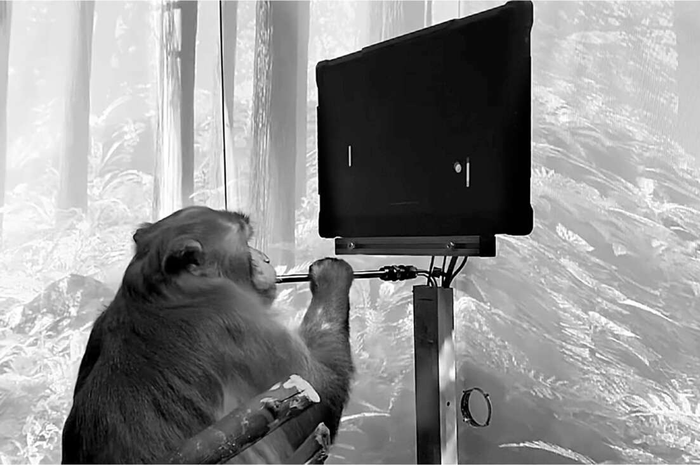

Giao diện người - máy tính
Một số bước tiến công nghệ quan trọng nhất trong kỷ nguyên số liên quan đến sự phát triển trong cách con người và máy móc giao tiếp với nhau, được gọi là "giao diện người-máy". Nhà tâm lý học kiêm kỹ sư J. C. R. Licklider, người đã nghiên cứu các hệ thống phòng không theo dõi máy bay trên màn hình, đã viết một bài báo quan trọng vào năm 1960 với tựa đề "Cộng sinh Người-Máy", cho thấy cách màn hình video có thể "khiến máy tính và con người cùng nhau suy nghĩ". Ông nói thêm: "Hy vọng rằng, trong tương lai không xa, bộ não con người và máy tính sẽ được kết nối chặt chẽ với nhau".
Các hacker MIT đã sử dụng những màn hình video này để tạo ra một trò chơi có tên Spacewar, góp phần tạo ra các trò chơi thương mại, để dễ dàng cho sinh viên đại học chơi, có giao diện trực quan đến mức hầu như không cần hướng dẫn. ("1. Bỏ xu 2. Tránh Klingons" là những hướng dẫn duy nhất trên trò chơi Star Trek đầu tiên của Atari.) Doug Engelbart đã kết hợp những màn hình như vậy với một con chuột cho phép người dùng giao tiếp với máy tính bằng cách trỏ và nhấp, và Alan Kay tại Xerox PARC đã giúp phát triển nó thành một giao diện đồ họa dễ sử dụng mô phỏng một màn hình desktop. Steve Jobs đã áp dụng điều đó cho máy tính Macintosh của Apple, và trong cuộc họp hội đồng quản trị cuối cùng của mình, khi ông sắp qua đời vào năm 2011, ông đã thử nghiệm một bước nhảy vọt khác trong giao diện người-máy: một ứng dụng có tên Siri cho phép con người và máy tính tương tác bằng giọng nói.
Mặc dù có tất cả những tiến bộ này, việc nhập-xuất giữa con người và máy móc vẫn cực kỳ chậm. Trong một chuyến đi năm 2016, Musk đang gõ trên iPhone bằng ngón tay cái và bắt đầu phàn nàn về việc mất bao lâu. Việc gõ phím chỉ cho phép thông tin truyền từ não chúng ta vào thiết bị với tốc độ khoảng một trăm bit mỗi giây. "Hãy tưởng tượng nếu bạn có thể nghĩ vào máy móc," ông nói, "giống như một kết nối tốc độ cao trực tiếp giữa tâm trí và máy móc của bạn." Ông nghiêng người về phía Sam Teller, người đang đi cùng xe với ông. "Anh có thể tìm một nhà thần kinh học có thể giúp tôi hiểu về giao diện máy tính-não không?" ông hỏi.
Giao diện người-máy tối thượng, Musk nhận ra, sẽ là một thiết bị kết nối máy tính của chúng ta trực tiếp với não bộ, chẳng hạn như một con chip bên trong hộp sọ có thể gửi tín hiệu não của chúng ta đến máy tính và nhận tín hiệu trở lại. Điều đó có thể cho phép thông tin truyền qua lại nhanh hơn tới một triệu lần. "Khi đó, bạn có thể có sự cộng sinh thực sự giữa người và máy," ông nói. Nói cách khác, nó sẽ đảm bảo rằng con người và máy móc sẽ làm việc cùng nhau như những đối tác. Để thực hiện điều này, vào cuối năm 2016, ông đã thành lập một công ty mà ông đặt tên là Neuralink, công ty này sẽ cấy những con chip nhỏ vào não và cho phép con người kết nối tâm trí với máy tính.
Giống như Optimus, ý tưởng về Neuralink được lấy cảm hứng từ khoa học viễn tưởng, đáng chú ý nhất là tiểu thuyết du hành vũ trụ Culture của Iain Banks, trong đó có một công nghệ giao diện người-máy được gọi là "ren thần kinh" được cấy vào con người và có thể kết nối tất cả suy nghĩ của họ với máy tính. "Khi tôi lần đầu tiên đọc Banks," ông nói, "tôi chợt nhận ra rằng ý tưởng này có cơ hội bảo vệ chúng ta trên mặt trận trí tuệ nhân tạo."
Mục tiêu cao cả của Musk thường đi kèm với các mô hình kinh doanh thực tế. Ví dụ, ông đã phát triển vệ tinh Starlink như một cách để tài trợ cho sứ mệnh lên sao Hỏa của SpaceX. Tương tự, ông lên kế hoạch sử dụng chip não Neuralink để giúp những người mắc các vấn đề thần kinh, chẳng hạn như ALS, tương tác với máy tính. "Nếu chúng ta có thể tìm ra ứng dụng thương mại tốt để tài trợ cho Neuralink", ông nói, "thì trong vài thập kỷ tới, chúng ta sẽ đạt được mục tiêu cuối cùng là bảo vệ chúng ta khỏi AI xấu bằng cách kết nối chặt chẽ thế giới loài người với máy móc kỹ thuật số."
Trong số những người đồng sáng lập có sáu nhà khoa học thần kinh và kỹ sư hàng đầu, dẫn đầu bởi nhà nghiên cứu giao diện não-máy Max Hodak. Thành viên duy nhất của nhóm sáng lập sống sót sau áp lực và hỗn loạn khi làm việc với Musk là DJ Seo, người đã chuyển từ Hàn Quốc đến Louisiana lúc bốn tuổi. Vì không nói tiếng Anh tốt khi còn nhỏ, anh rất bực bội vì có những suy nghĩ mà mình không thể diễn đạt. "Làm thế nào tôi có thể đưa thứ trong đầu ra ngoài một cách hiệu quả nhất có thể?", anh bắt đầu tự hỏi. "Nó phải là một thứ gì đó nhỏ bé được đặt trong đầu tôi." Tại Caltech, sau đó tại Berkeley, anh đã phát triển cái mà anh gọi là "bụi thần kinh", những thiết bị cấy ghép nhỏ có thể được đưa vào não và gửi tín hiệu.
Musk cũng tuyển dụng một nhà đầu tư công nghệ sắc sảo và tinh anh tên là Shivon Zilis. Khi còn là sinh viên lớn lên gần Toronto, cô ấy là một ngôi sao khúc côn cầu, nhưng cô ấy cũng trở thành một người đam mê công nghệ sau khi đọc cuốn sách năm 1999 của Ray Kurzweil, The Age of Spiritual Machines: When Computers Exceed Human Intelligence. Sau khi học tại Yale, cô làm việc tại một vài vườn ươm khởi nghiệp, hỗ trợ các dự án AI mới, và cô trở thành cố vấn bán thời gian tại OpenAI.
Khi Musk thành lập Neuralink, ông đã mời cô đi uống cà phê và đề nghị cô tham gia. "Neuralink không chỉ là nghiên cứu", ông đảm bảo với cô. "Đó là về việc xây dựng các thiết bị thực sự." Cô nhanh chóng quyết định rằng điều đó sẽ thú vị và hữu ích hơn là tiếp tục làm nhà đầu tư mạo hiểm. "Tôi nhận thấy rằng tôi học được nhiều bài học độc đáo từ Elon mỗi phút hơn bất kỳ người nào khác mà tôi từng gặp", cô nói. "Thật ngớ ngẩn nếu không dành một phần cuộc đời của bạn với một người như vậy." Ban đầu, cô dành thời gian làm việc cho các dự án trí tuệ nhân tạo tại cả ba công ty của ông — Neuralink, Tesla và SpaceX — nhưng cuối cùng cô đã chuyển sang vai trò quản lý cấp cao tại Neuralink, ngoài việc là bạn đồng hành thân thiết của Musk (điều này sẽ được đề cập sau).
Con chip
Công nghệ cơ bản của chip Neuralink dựa trên Utah Array, được phát minh tại Đại học Utah vào năm 1992, là một vi mạch được gắn hàng trăm kim có thể được đẩy vào não. Mỗi kim phát hiện hoạt động của một tế bào thần kinh đơn lẻ và gửi dữ liệu bằng dây đến một hộp được buộc vào hộp sọ của ai đó. Vì não có khoảng 86 tỷ tế bào thần kinh, nên đây chỉ là một bước nano hướng tới giao diện người-máy tính.
Vào tháng 8 năm 2019, Musk đã xuất bản một bài báo khoa học mô tả cách Neuralink sẽ cải tiến Utah Array để tạo ra thứ mà ông gọi là "một nền tảng giao diện não-máy tích hợp với hàng nghìn kênh." Chip của Neuralink có hơn ba nghìn điện cực trên chín mươi sáu sợi chỉ. Như mọi khi, Musk không chỉ tập trung vào sản phẩm mà còn tập trung vào cách sản xuất và triển khai nó. Robot làm việc với tốc độ cao sẽ cắt một lỗ nhỏ trên hộp sọ người, lắp chip và đẩy các sợi chỉ vào não.
Tại buổi thuyết trình công khai của Neuralink vào tháng 8 năm 2020, ông đã giới thiệu phiên bản đầu tiên của thiết bị trên một chú heo tên Gertrude được cấy chip vào não. Đoạn video quay cảnh Gertrude chạy trên máy chạy bộ cho thấy con chip có thể phát hiện các tín hiệu trong não và gửi đến máy tính. Musk giơ con chip có kích thước bằng đồng xu. Khi được đặt dưới hộp sọ, nó có thể truyền dữ liệu không dây, đảm bảo người dùng không giống người máy trong phim kinh dị. "Tôi có thể đang dùng Neuralink mà các bạn không hề biết", Musk nói. "Biết đâu đấy".
Vài tháng sau, Musk đến phòng thí nghiệm Neuralink ở Fremont, gần nhà máy Tesla, nơi các kỹ sư cho ông xem phiên bản mới nhất. Nó kết hợp bốn con chip riêng biệt, mỗi con có khoảng một nghìn sợi. Chúng sẽ được cấy vào các phần khác nhau của hộp sọ với dây nối chúng với một bộ định tuyến được gắn sau tai. Musk im lặng gần hai phút, trong khi Zilis và các đồng nghiệp quan sát. Sau đó, ông đưa ra phán quyết: ông ghét nó. Nó quá phức tạp, quá nhiều dây và kết nối.
Lúc đó, ông đang trong quá trình loại bỏ các kết nối khỏi động cơ Raptor của SpaceX. Mỗi kết nối là một điểm lỗi tiềm ẩn. "Nó phải là một thiết bị duy nhất", ông nói với các kỹ sư Neuralink đang chán nản. "Một thiết bị gọn gàng, không dây, không kết nối, không bộ định tuyến." Không có quy luật vật lý nào - không có nguyên tắc cơ bản nào - ngăn cản tất cả chức năng nằm trên một thiết bị. Khi các kỹ sư cố gắng giải thích sự cần thiết của bộ định tuyến, mặt Musk trở nên lạnh lùng. "Xóa", ông nói. "Xóa, xóa, xóa."
Sau khi rời khỏi cuộc họp, các kỹ sư trải qua các giai đoạn thường thấy sau cơn sốc hậu Musk: hoang mang, sau đó tức giận, rồi lo lắng. Nhưng trong vòng một tuần, họ bắt đầu thấy hứng thú, bởi vì họ nhận ra phương pháp mới này thực sự có thể hiệu quả.
Khi Musk quay lại phòng thí nghiệm vài tuần sau đó, họ cho ông xem một con chip duy nhất có thể xử lý dữ liệu từ tất cả các sợi và truyền qua Bluetooth đến máy tính. Không kết nối, không bộ định tuyến, không dây. "Chúng tôi từng nghĩ điều này là không thể", một trong những kỹ sư nói, "nhưng giờ chúng tôi thực sự rất phấn khích."
Một vấn đề họ gặp phải là yêu cầu con chip phải rất nhỏ. Điều này khiến việc kéo dài tuổi thọ pin và hỗ trợ nhiều sợi trở nên khó khăn. "Tại sao nó phải nhỏ như vậy?", Musk hỏi. Ai đó đã mắc sai lầm khi nói rằng đó là một trong những yêu cầu họ được giao. Điều này đã kích hoạt thuật toán của Musk, bắt đầu bằng việc đặt câu hỏi về mọi yêu cầu. Sau đó, ông thảo luận với họ về khoa học cơ bản của kích thước chip. Hộp sọ của chúng ta tròn, vậy con chip có thể phồng lên một chút không? Và đường kính có thể lớn hơn không? Họ đi đến kết luận rằng hộp sọ người có thể dễ dàng chứa một con chip lớn hơn.
Khi thiết bị mới sẵn sàng, họ đã cấy nó vào một trong những con khỉ macaque tên là Pager được nuôi tại phòng thí nghiệm. Nó được dạy chơi trò chơi điện tử Pong bằng cách thưởng cho nó một ly sinh tố trái cây khi nó đạt điểm cao. Thiết bị Neuralink ghi lại các tế bào thần kinh nào hoạt động mỗi khi nó di chuyển cần điều khiển theo một cách nhất định. Sau đó, cần điều khiển bị vô hiệu hóa và các tín hiệu từ não của con khỉ điều khiển trò chơi. Đó là một bước tiến lớn hướng tới mục tiêu của Musk là tạo ra kết nối trực tiếp giữa não và máy móc. Neuralink đã tải video lên YouTube và trong vòng một năm, nó đã được xem sáu triệu lượt.

Một con khỉ chơi Pong chỉ bằng sóng não